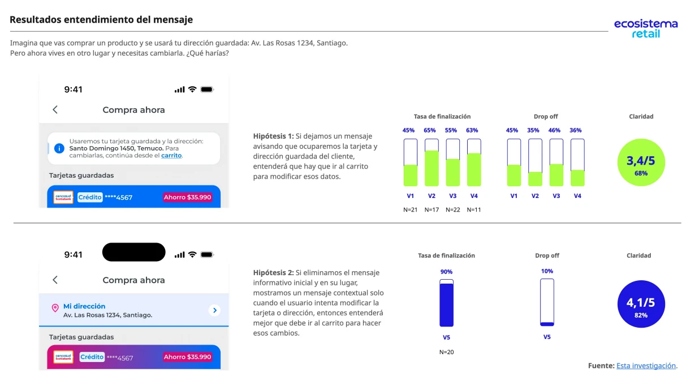
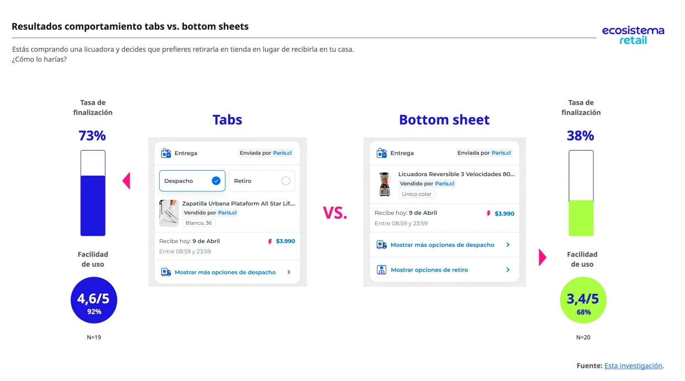
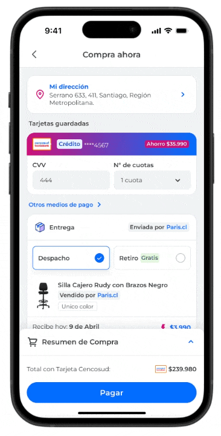

Fast Checkout
Todo partió con una idea bastante razonable: si otros checkouts mostraban primero la entrega, quizás nosotros también debíamos hacerlo. El problema era que todavía no sabíamos si eso mejoraba algo.
Tabs superaron al bottom sheet en finalización durante pruebas. Más tarde, un A/B en producción no encontró ganador al invertir el orden.
Lo que estaba pasando
El proyecto buscaba acelerar la compra de clientes frecuentes con datos guardados, con el objetivo de reducir 3,5 puntos el Churn Billing en ese segmento. La épica atribuía fricción a la falta de tarjeta guardada, pero la evidencia disponible mostraba señales más fuertes en errores del proceso y medios de pago: CES 3,8/5 y 48% de la respuesta cerrada apuntando a errores al pagar.
Lo que creíamos al principio
Acotamos la experiencia rápida a personas con dirección y tarjeta guardadas. La idea original era que se pudiera hacer de todo dentro de Fast Checkout —editar la dirección, elegir otro medio de pago y no solo la tarjeta guardada—, pero limitaciones técnicas también empujaron el flujo hacia ese recorte: cambiar esos datos devolvía al checkout tradicional. La pregunta pasó de comprimir pasos a decidir qué acelerar sin esconder decisiones importantes. Planteamos que un aviso explícito ayudaría a entender que se reutilizarían esos datos — y eso fue lo primero que pusimos a prueba.

Lo que hicimos después
Otro punto decisivo a nivel de interacción era si manteníamos las tabs o pasábamos todo a un bottom sheet, que permitía ahorrar espacio en mobile. Tabs vs bottom sheet dio 73% vs 38% de finalización, así que mantuvimos tabs. Más tarde Negocio pidió poner la entrega arriba, apoyándose en benchmarks externos. Propuse un A/B con tráfico real de Paris.

La experiencia final
El flujo consolidó las decisiones validadas durante el proyecto en una experiencia de compra rápida para clientes con datos guardados.

Fast Checkout está disponible en Paris.cl y Paris App. Desde una PDP, inicia sesión con una cuenta que tenga una tarjeta guardada y selecciona “Comprar ahora”. La disponibilidad puede depender de las condiciones de la cuenta y del producto.
La experiencia llegó a producción con menos incertidumbre
Fast Checkout alcanzó 90% de CES positivo, frente a 80% en Billing: una diferencia observada de +10 puntos porcentuales. Lo presento como comparación entre experiencias, no como una atribución causal exclusiva al rediseño.
Durante la validación, la alternativa sin aviso inicial alcanzó 90% de finalización y 4,1/5 de claridad. En la decisión de interacción, tabs obtuvo 73% de finalización y 4,6/5 de facilidad, frente a 38% y 3,4/5 del bottom sheet.
El A/B de la entrega arriba que pidió Negocio corrió en web entre el 13 de abril y el 6 de mayo de 2026. La variante no ganó en ninguna métrica ni segmento, por lo que mantuvimos el orden original en vez de implementar un cambio sustentado solo en benchmarks. El flujo quedó instrumentado con orderType=FastCheckout para medir el CES.
El 90% vs. 80% de CES es una comparación observada entre Fast Checkout y Billing; no prueba por sí sola que el diseño causó los +10 pp. El A/B solo corrió en web mientras la app concentraba ~91% de las sesiones y detectaba cambios de alrededor de 3 puntos. Tampoco tengo una comparación causal de conversión contra el checkout tradicional ni un dato aislado de compras con tarjeta guardada.
El resultado no tenía que validar nuestra idea
El valor del experimento fue reducir incertidumbre antes de convertir un benchmark en una decisión permanente. Cuando la variante no mostró una mejora consistente, mantuvimos el orden existente en vez de forzar una narrativa de éxito.
Hablemos
Disponible para roles Senior Product Designer / UX Senior.
Temuco, Chile